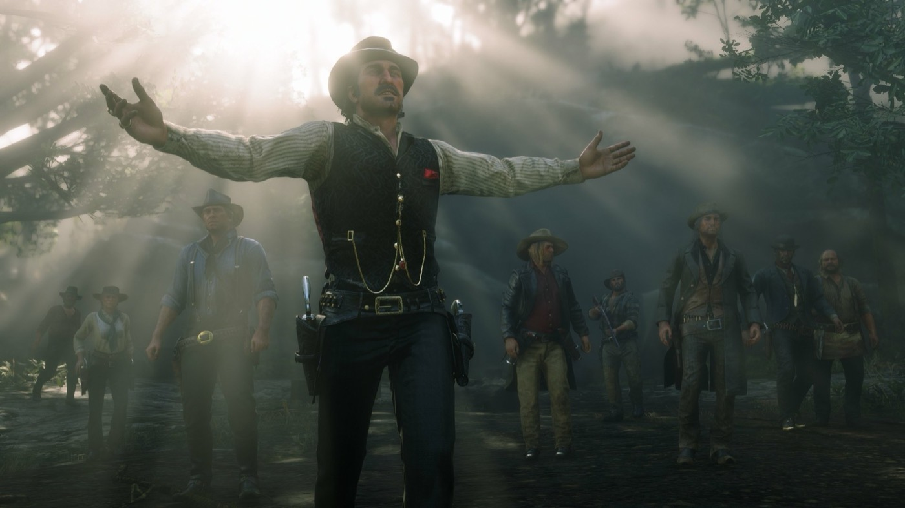
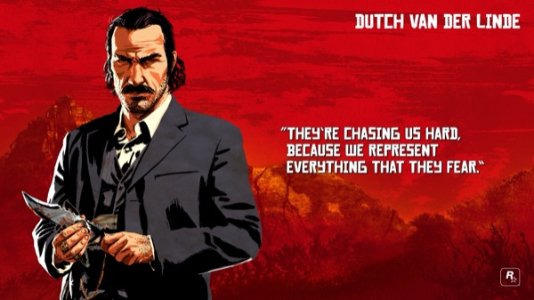
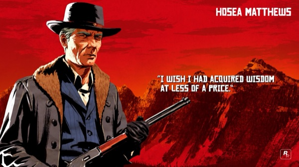
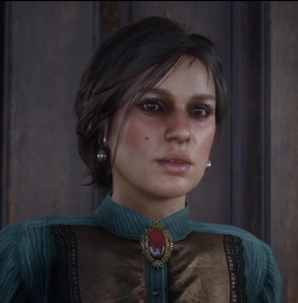
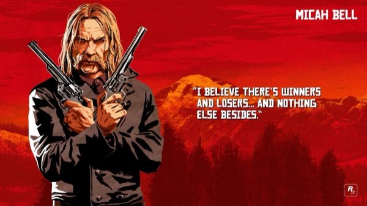
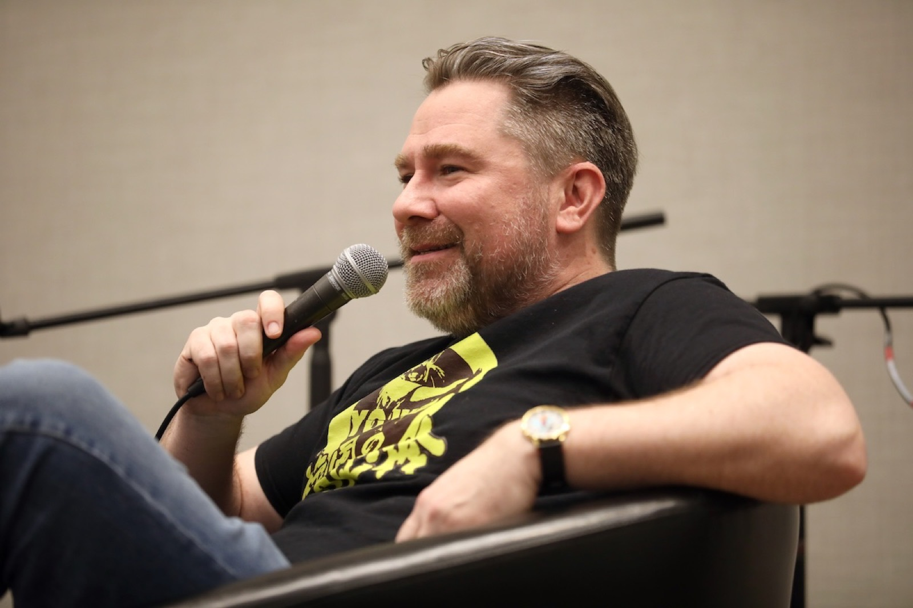
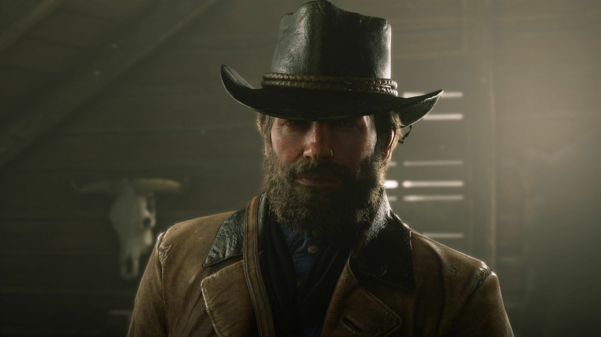
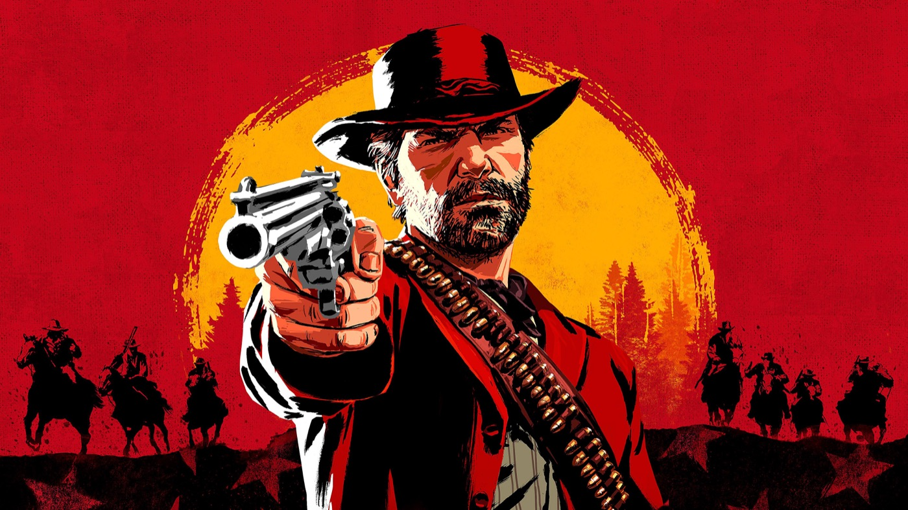

Personnage · Gang Van der Linde
Arthur Morgan
Arthur Morgan est le héros de Red Dead Redemption 2 (2018). Rockstar le présente comme l'homme de main le plus fiable et le plus capable de Dutch depuis l'enfance, un homme qui n'a jamais connu d'autre vie que celle de hors-la-loi.
Il est interprété par Roger Clark, récompensé pour ce rôle par le prix de la meilleure interprétation aux Game Awards 2018.
- Naissance
- Début des années 1860
- Mort
- 1899
- Statut
- Décédé
- Nationalité
- Américaine
- Affiliation
- Gang Van der Linde
- Rôle
- Principal homme de main de Dutch
- Famille
- Un fils, Isaac, avec Eliza (tous deux tués)
- Jeux
- Red Dead Redemption 2
- Voix
- Roger Clark
Biographie
Origines
Le jeu ne donne aucune année de naissance. En 1899, Arthur dit à Charles faire partie du gang depuis "une vingtaine d'années, depuis tout gamin", et Hosea raconte qu'ils l'ont trouvé vers treize ans, "peut-être un peu plus". D'après le guide officiel, il entre dans le gang à quatorze ans. L'agent Milton le décrira plus tard comme un gamin des rues orphelin, recueilli par Dutch.
Arthur raconte que Dutch lui a appris à lire, comme à John, et que Dutch et Hosea lui ont enseigné l'essentiel de ce qu'il sait. D'après le guide officiel, il a eu un fils, Isaac, avec une serveuse nommée Eliza ; il leur envoyait de l'argent, jusqu'à ce que tous deux soient tués lors d'un vol. Il a été fiancé à Mary Gillis, devenue Mary Linton ; dans la lettre où elle lui rend sa bague, elle écrit que son monde est un monde dont on ne s'échappe pas. Le courrier du gang est adressé à un alias inventé par Dutch, Tacitus Kilgore.

Red Dead Redemption 2 (1899)
Chapitre 1 : Colter
Après le braquage raté du ferry de Blackwater, le gang se réfugie à Colter, un camp minier abandonné sous la neige. Avec Javier, Arthur retrouve John, blessé par des loups. Il participe à l'attaque d'un camp des O'Driscoll dans "Old Friends", puis à celle d'un train appartenant à Leviticus Cornwall, qui lance Cornwall sur la piste du gang et y remet les Pinkerton.
Chapitre 2 : Horseshoe Overlook
Arthur aide à libérer Sean MacGuire des chasseurs de primes et tire un révérend Swanson ivre d'un pont ferroviaire juste avant le passage d'un train. Pour Leopold Strauss, il recouvre des dettes ; dans "Money Lending and Other Sins III", il roue de coups un fermier malade, Thomas Downes, qui lui crache du sang au visage. Les agents Milton et Ross l'abordent pendant qu'il pêche avec Jack et lui proposent un marché pour livrer Dutch ; il refuse. Il aide aussi Mary Linton à rechercher son frère. Dans "The Sheep and the Goats", une fusillade contre les hommes de Cornwall à Valentine pousse le gang à partir pour Clemens Point.
Chapitre 3 : Clemens Point
Le gang joue les Gray contre les Braithwaite. Dans l'embuscade de Rhodes, Sean est tué et Arthur abat le shérif Leigh Gray. Capturé par Colm O'Driscoll, Arthur s'échappe blessé. Il retourne au ranch des Downes réclamer la dette à la veuve de Thomas, Edith. Après l'enlèvement de Jack par les Braithwaite, le gang incendie leur manoir et s'installe à Shady Belle.
Chapitre 4 : Saint-Denis
À Saint-Denis, Arthur reprend Jack à Angelo Bronte ; Dutch tue ensuite Bronte et le jette aux alligators, ce qui trouble Arthur. Il rencontre le chef Rains Fall et son fils Eagle Flies, et les aide contre Cornwall. Le braquage de la banque de Saint-Denis est un piège des Pinkerton : Hosea est tué par l'agent Milton, Lenny meurt, John est arrêté, et les survivants s'enfuient en bateau.
Chapitre 5 : Guarma
Naufragés à Guarma, les survivants s'allient aux rebelles d'Hercule Fontaine contre Alberto Fussar ; Arthur tue Fussar avant le retour. De nouveau auprès du gang, Arthur s'effondre à Saint-Denis, et un médecin lui diagnostique la tuberculose.
Chapitre 6 : Beaver Hollow
Avec Sadie, Arthur fait évader John du pénitencier de Sisika, contre l'avis de Dutch. Il peut effacer les dernières dettes qu'on l'envoie recouvrer, et chasse Strauss du camp. Il aide les Wapiti contre l'armée. Aux champs pétrolifères, dans "My Last Boy", Dutch l'abandonne ; lors de l'attaque du convoi de la solde de l'armée, dans "Our Best Selves", John tombe du train et Dutch le laisse pour mort. Arthur rompt avec Dutch.
La dernière mission et les quatre fins
Dans "Red Dead Redemption", Arthur sauve Abigail à Van Horn, où l'agent Milton révèle que Micah Bell est l'informateur des Pinkerton, avant qu'Abigail ne l'abatte. De retour à Beaver Hollow, Arthur et John font face à Micah ; Susan Grimshaw se range à leurs côtés et est abattue par Micah. Les Pinkerton attaquent ; les deux hommes s'échappent par les grottes et partent à cheval, puis continuent à pied quand leurs montures sont abattues. Sur la montagne, Arthur choisit d'aider John à se mettre à l'abri, ce qui augmente son honneur, ou de retourner chercher l'argent du gang, ce qui le diminue. Dans les deux cas, il confie à John son chapeau et sa sacoche.
- Aider John, honneur élevé : Micah s'en va ; Arthur se traîne au bord de la falaise et meurt face au lever du soleil. Un cerf apparaît.
- Aider John, honneur bas : Micah lui lance qu'il ne vaut pas mieux que lui et l'abat d'une balle dans la tête. Un coyote apparaît.
- Retourner chercher l'argent, honneur élevé : Arthur et Micah s'affrontent au couteau ; Arthur blesse Micah à l'œil gauche et, quand Micah lui rappelle qu'il est mourant, lui répond qu'il est "mort à l'intérieur" ; il meurt au lever du soleil.
- Retourner chercher l'argent, honneur bas : Micah le poignarde ; une fois Dutch parti, il le frappe de nouveau dans le dos.
Dans toutes les fins, Dutch s'en va. Le jeu ne précise pas de seuil d'honneur chiffré.
Après sa mort
Dans l'épilogue de 1907, le joueur incarne John. Le souvenir d'Arthur le traverse : Arthur lui a sauvé la vie plus d'une fois, rappelle John, et Sadie lui dit qu'ils lui doivent bien ça au moment de traquer Micah au mont Hagen. Pendant le générique de fin, Mary Linton se recueille sur sa tombe. Arthur n'apparaît ni dans Red Dead Redemption (2010), qui se déroule plus tard, ni dans Red Dead Online.
Relations

Dutch van der Linde
Son mentor depuis l'enfance, contre qui il se retourne en 1899.

Hosea Matthews
L'a recueilli avec Dutch et lui a appris l'essentiel.

John Marston
Élevé avec lui ; Arthur donne sa vie pour le sortir de là.

Mary Linton
Son ancienne fiancée.

Micah Bell
L'informateur, et son dernier adversaire.

Sadie Adler
Libère John de Sisika avec lui.
Missions
Missions de l'histoire principale de Red Dead Redemption 2 dans lesquelles le joueur incarne Arthur.
| Mission | Ch. | Résumé |
|---|---|---|
| Outlaws from the West | 1 | Le gang se réfugie à Colter |
| Enter, Pursued by a Memory | 1 | Sauve John des loups |
| The Aftermath of Genesis | 1 | Chasse avec Charles |
| Old Friends | 1 | Attaque d'un camp O'Driscoll |
| Who the Hell is Leviticus Cornwall? | 1 | Attaque le train de Cornwall |
| Eastward Bound | 1 | Quitte Colter |
| Who is Not Without Sin | 2 | Sauve Swanson d'un train |
| Exit Pursued by a Bruised Ego | 2 | Chasse à l'ours légendaire avec Hosea |
| The Spines of America | 2 | Vol d'une diligence avec Hosea |
| Polite Society, Valentine Style | 2 | Soirée à Valentine |
| Good, Honest, Snake Oil | 2 | Prime sur un vendeur d'élixir (tuyau d'Uncle) |
| Pouring Forth Oil I-IV | 2 | Wagon-citerne, puis attaque du train |
| A Fisher of Men | 2 | Pêche avec Jack ; offre des Pinkerton |
| Americans at Rest | 2 | Nouvelles de Sean à Valentine |
| The First Shall Be Last | 2 | Libère Sean |
| Paying a Social Call | 2 | Attaque de Six Point Cabin |
| Money Lending and Other Sins I-III | 2 | Recouvrements ; la dette Downes |
| We Loved Once and True I-III | 2 | Aide Mary Linton |
| A Quiet Time | 2 | Nuit de beuverie avec Lenny |
| Blessed are the Meek? | 2 | Fait évader Micah de la prison de Strawberry |
| An American Pastoral Scene | 2 | Attaque d'une diligence avec Micah |
| The Sheep and the Goats | 2 | Vol de moutons avec John ; fusillade contre Cornwall |
| A Strange Kindness | 2 | Sauve un colon allemand ; nouveau camp |
| Further Questions of Female Suffrage | 3 | Ravitaillement avec Sadie |
| The New South | 3 | Travaille pour les Gray |
| American Distillation | 3 | Démantèle un alambic |
| The Course of True Love I-III | 3 | Messager de Beau et Penelope |
| An Honest Mistake | 3 | Attaque d'un chariot de Cornwall |
| Money Lending and Other Sins IV | 3 | Recouvrements |
| Preaching Forgiveness as He Went | 3 | Raid sur Shady Belle avec Lenny |
| Sodom? Back to Gomorrah | 3 | Braquage de la banque de Valentine |
| Advertising, The New American Art | 3 | Arnaque à la gnôle avec Hosea |
| Magicians for Sport | 3 | Sauve Trelawny |
| Horse Flesh for Dinner | 3 | Vole les chevaux des Braithwaite |
| Friends in Very Low Places | 3 | Coup du coffre avec Trelawny |
| The Fine Joys of Tobacco | 3 | Incendie les champs des Gray avec Sean |
| Blessed are the Peacemakers | 3 | Capturé par Colm, s'échappe |
| A Short Walk in a Pretty Town | 3 | Embuscade de Rhodes |
| Blood Feuds, Ancient and Modern | 3 | Assaut de Braithwaite Manor |
| The Battle of Shady Belle | 3 | Prend Shady Belle |
| The Joys of Civilization | 4 | Arrivée à Saint-Denis |
| Angelo Bronte, A Man of Honor | 4 | Ramène Jack |
| Fatherhood and Other Dreams | 4 | Aide Mary Linton |
| Money Lending and Other Sins V | 4 | Recouvrements |
| The Gilded Cage | 4 | La réception du maire |
| No, No and Thrice, No | 4 | Libère Tilly |
| A Fine Night of Debauchery | 4 | Braquage du bateau à aubes |
| Horsemen, Apocalypses | 4 | Attaque des O'Driscoll sur Shady Belle |
| Urban Pleasures | 4 | Coup de la gare de tramways |
| American Fathers I-II | 4 | Aide les Wapiti |
| Country Pursuits | 4 | Avec Dutch à Lagras, trouve un bateau pour atteindre Bronte |
| Revenge is a Dish Best Eaten | 4 | Assaut du manoir de Bronte |
| Banking, The Old American Art | 4 | Braquage de la banque de Saint-Denis |
| Welcome to the New World | 5 | Naufrage à Guarma |
| A Kind and Benevolent Despot | 5 | Libère Javier |
| Savagery Unleashed | 5 | Combat pour les rebelles |
| Hell Hath No Fury | 5 | Coule le navire de guerre |
| Paradise Mercifully Departed | 5 | Tue Fussar |
| Dear Uncle Tacitus | 5 | Retour sur le continent |
| Fleeting Joy | 5 | Attaque des Pinkerton sur Lakay |
| A Fork in the Road | 5 | Diagnostic de tuberculose |
| That's Murfree Country | 5 | Prend Beaver Hollow |
| Icarus and Friends | 6 | Repère Sisika en ballon |
| Visiting Hours | 6 | Libère John |
| Do Not Seek Absolution I-II | 6 | Aide la famille Downes |
| The Course of True Love IV-V | 6 | Escorte Beau et Penelope |
| Money Lending and Other Sins VI-VII | 6 | Peut effacer des dettes ; chasse Strauss |
| Just a Social Call | 6 | Cornwall tué à Annesburg |
| A Rage Unleashed | 6 | Récupère les chevaux des Wapiti |
| The Delights of Van Horn | 6 | La diligence de dynamite |
| Goodbye, Dear Friend | 6 | La pendaison de Colm |
| Favored Sons | 6 | Embuscade contre une patrouille |
| The Bridge to Nowhere | 6 | Fait sauter le pont de Bacchus |
| Archeology for Beginners | 6 | Mission pour Rains Fall |
| Honor, Amongst Thieves | 6 | Vaccins pour les Wapiti |
| The Fine Art of Conversation | 6 | Rencontre de trêve, Monroe sauvé |
| Mrs. Sadie Adler, Widow I-II | 6 | La vengeance de Sadie |
| The King's Son | 6 | Libère Eagle Flies |
| My Last Boy | 6 | Bataille des champs pétrolifères |
| Our Best Selves | 6 | Attaque du convoi de la solde |
| Red Dead Redemption | 6 | Dernière mission |
Arthur croise aussi des inconnus qui proposent des missions secondaires aux quatre coins de la carte, dont The Noblest of Men, and a Woman (les pistoleros légendaires), The Smell of the Grease Paint, Geology for Beginners, A Test of Faith, The Iniquities of History, Oh, Brother, The Artist's Way, The Wisdom of the Elders et The Veteran.
Le personnage jouable
- Un système d'honneur suit ses actes. Il modifie certains dialogues et certaines scènes, l'animal qui apparaît après sa mort (un cerf ou un coyote), et l'issue de la dernière mission.
- Le Dead Eye ralentit le temps et lui permet de marquer ses cibles.
- Son poids varie selon ce que le joueur lui fait manger : trop maigre, il a moins de santé et plus d'endurance ; trop lourd, l'inverse. Il peut se laver, et ses cheveux et sa barbe poussent en temps réel.
- Une fois malade, ses jauges se vident plus vite et la nourriture le restaure moins.
- Il tient un journal de croquis et de notes, enrichi au fil de l'histoire.
Citations
Nothing means more to me than this gang. The bond we share... it's the most real thing to me. I would kill for it, I would happily die for it.
The First Shall Be Last (chapitre 2). Traduction : « Rien ne compte plus pour moi que ce gang. Ce lien qui nous unit... c'est ce qu'il y a de plus vrai pour moi. Je tuerais pour lui, et je mourrais pour lui sans hésiter. »You're my favorite parasite. No... ringworm's my favorite parasite, you're my second favorite parasite.
Polite Society, Valentine Style (chapitre 2), à Uncle. Traduction : « T'es mon parasite préféré. Non... mon parasite préféré, c'est la teigne, toi t'es mon deuxième parasite préféré. »I'm gonna get you out of this bullshit... if it's the last goddamn thing I do.
Red Dead Redemption (chapitre 6), à John. Traduction : « Je vais te sortir de ce merdier... même si c'est la dernière chose que je fais. »John made it. He's the only one. Rest of us... no. But... I tried. In the end... I did.
Red Dead Redemption (chapitre 6). Traduction : « John s'en est sorti. C'est le seul. Nous autres... non. Mais... j'ai essayé. Au bout du compte... j'ai essayé. »And you're dead. Inside you're dead.
Red Dead Redemption (chapitre 6), à Micah. Traduction : « Et toi, t'es mort. Mort à l'intérieur. »
Conception et interprétation
Un héros unique
Après les trois héros de Grand Theft Auto V, Rockstar revient à un personnage unique. Un choix plus adapté à la structure et au récit d'un western, explique Josh Bass, de Rockstar, au Hollywood Reporter en septembre 2018 : c'est l'histoire d'Arthur. Le producteur Rob Nelson précise à Variety que l'équipe voulait accompagner Arthur tout au long de l'histoire et voir comment il change.
L'écriture
Le scénariste Dan Houser explique à GQ que le parcours d'Arthur n'est pas celui d'un héros qui gagne en puissance, puisqu'il l'est presque dès le départ, mais celui d'un homme dont la vision du monde est démontée pièce par pièce. Il décrit à Vulture un homme pris entre la dureté de la nature et la brutalité d'une industrialisation qui avance, avec le sentiment que son temps est peut-être passé.
Plusieurs idées ont été abandonnées. Arthur a un temps eu deux histoires d'amour, mais l'une ne fonctionnait pas, raconte Houser à Vulture ; selon le magazine, environ cinq heures ont été retirées d'un jeu qui en comptait 65. Dans un podcast en 2025, Houser explique qu'une première ouverture, où le bébé d'Arthur mourait, a été supprimée parce qu'elle était trop dure et rendait Arthur très antipathique au départ. Roger Clark confie à Twinfinite qu'après la suppression d'un événement du début de l'histoire, Arthur paraissait simplement grincheux, et que l'équipe a dû retravailler certaines scènes.
Roger Clark

Roger Clark naît aux États-Unis en 1978, d'une mère irlandaise et d'un père irlando-américain, s'installe à douze ans près de Sligo, en Irlande, et étudie le théâtre au pays de Galles. Il passe l'audition sans avoir reçu le texte à l'avance, en bottes de cowboy, comme on le lui a demandé. Son premier jour sur le projet date d'août 2013, raconte-t-il au Hollywood Reporter ; le directeur de la capture de performance, Rod Edge, précise que les toutes premières scènes tournées l'ont été avec lui. Clark parle de cinq ans de travail, pour l'essentiel en capture de performance plutôt qu'en cabine.
Ses modèles, explique-t-il au Hollywood Reporter, sont Toshiro Mifune, John Wayne et John Marston, plutôt que l'Homme sans nom de Clint Eastwood, car Arthur devait être un peu plus bavard. Il confie à Twinfinite que l'objectif était un personnage cohérent, qu'il soit un parfait salaud ou que le joueur choisisse la voie de l'honneur.
Accueil
Récompenses
- The Game Awards 2018 : prix de la meilleure interprétation (Roger Clark).
- BAFTA Games Awards 2019 : nommé dans la catégorie interprète ; prix remporté par Jeremy Davies (God of War).
- D.I.C.E. Awards 2019 : nommé pour le meilleur personnage ; prix remporté par Kratos (God of War).
- New York Game Awards 2019 : nommé pour le Great White Way Award for Best Acting in a Game.
Critiques et classements
IGN salue l'authenticité contagieuse de la voix de Clark. Kirk Hamilton, chez Kotaku, trouve d'abord Arthur volontairement quelconque, avant d'y voir à la fin un personnage à part entière. Dans Game Informer, Javy Gwaltney voit dans le parcours d'Arthur une méditation réussie sur la mort, et sur ce que la rédemption a de désordonné et de complexe. Dans le New York Times, Peter Suderman décrit un homme mauvais au bon cœur, puisque ses choix sont ceux du joueur.
GamesRadar+ classe Arthur 29e des 50 personnages de jeu vidéo les plus emblématiques en 2021. En avril 2024, un sondage public de la BAFTA auprès de plus de 4 000 votants le place 11e. Selon l'Irish Times, certains joueurs ont mis du temps à l'adopter, mais il est devenu l'un des personnages les mieux accueillis de Rockstar.
Anecdotes
- "Tacitus Kilgore", le nom inscrit sur le courrier du gang, est un alias inventé par Dutch ; dans l'épilogue, les lettres de John sont adressées à Jim Milton.
- L'agent Milton évalue la prime sur la tête d'Arthur à 5 000 dollars.
- Dan Houser raconte à GQ avoir évité Roger Clark sur le plateau pour ne pas entendre sa vraie voix : sur 20 000 à 30 000 répliques, Clark ne perd jamais l'accent.
- Clark raconte à Shacknews que ses répliques adressées à son cheval ont été enregistrées en cabine, puis refaites, la première prise étant "un peu trop érotique".
Galerie

